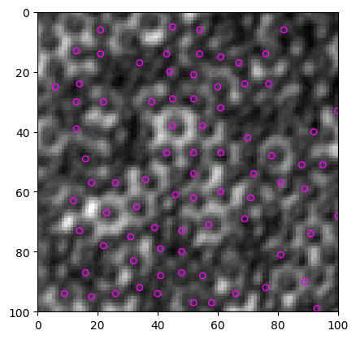
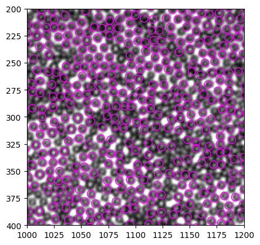

Examples of use¶
[1]:
from bwtrack.bwtrack import *
from skimage import io
[2]:
help(find_white)
Help on function find_white in module bwtrack.bwtrack:
find_white(img, size=7, mask_size=None, mask_pattern='dw', thres=None, std_thres=None, plot_hist=False)
Find "white" particles in Qiaoge's images of particles at water-oil interface.
:param img: input image
:param size: particle size to look for (px)
:param mask_size: mask (template) image size (px). By default, ``mask_size`` is set to ``size+2``. Making mask slightly larger can help making the correlation map sharper, sometimes.
:param mask_pattern: choose from "mh", "gs" and "dw", which stands for mexican hat, gaussian and double well, respectively.
:param thres: mean intensity threshold, meant to discern white particles from black particles.
:param std_thres: standard deviation threshold, meant to discern white particles from black particles.
:plot_hist: if True, plot mean intensity and standard deviation histogram. This can help you to determine good threshold values. Set to False when doing batch tracking (default).
:return particles: a list of particle coordinates detected.
.. rubric:: Edit
* Nov 16, 2022 -- Initial commit.
* Jan 20, 2023 -- add double well mask pattern.
[3]:
img = io.imread("large.tif")
particles = find_white(img)
Threshold value(s) are missing, all detected features are returned.
[4]:
help(show_result)
Help on function show_result in module bwtrack.bwtrack:
show_result(img, particles, size=7, ROI=None)
Convenient function to plot particles on top of the raw image.
:param img: raw image
:param particles: result of ``find_black()`` or ``find_white``
:param size: particle size (px)
:param ROI: region of interest, defined as (left, right, bottom, top)
:return: fig, ax, matplotlib handles for further adjustment.
.. rubric:: Edit
* Jan 20, 2023 -- Initial commit.
[5]:
show_result(img, particles, size=2)
[5]:
(<Figure size 640x480 with 1 Axes>, <AxesSubplot: >)

[6]:
show_result(img, particles, ROI=[1000, 1200, 400, 200])
[6]:
(<Figure size 640x480 with 1 Axes>, <AxesSubplot: >)
